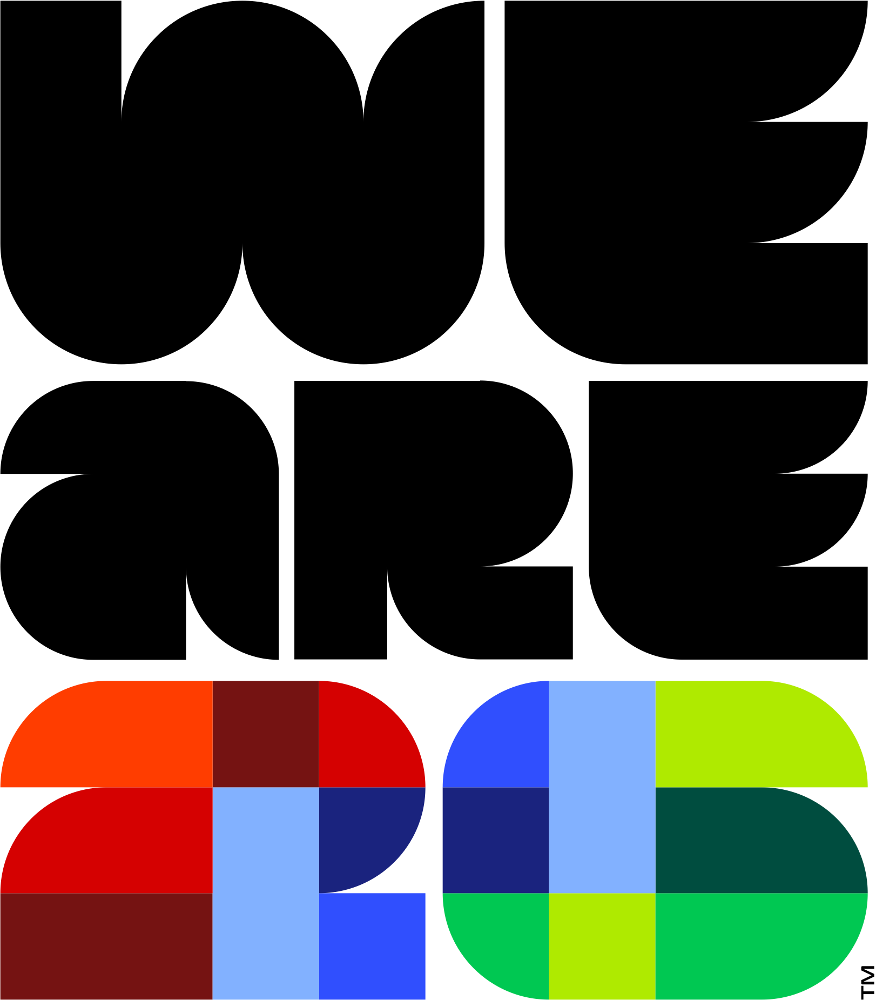

Arrivals & Departures
Ensuring smooth travels during the FIFA World Cup
What is AND?
Arrivals & Departures (AND) is the team that makes sure every FIFA client group — from teams and referees to VIPs and fans — moves from the airport to hotels and stadiums smoothly and safely. We operate across the U.S., Mexico, and Canada to create a seamless journey during the FIFA World Cup.
Why It Matters
Airports are busy. During the World Cup, the numbers surge. AND integrates with airport operations so that, even on peak days, guests move efficiently — fans focus on football and teams focus on the match.
What We Do
- Coordinate with airport stakeholders
- Manage arrivals & departures for all FIFA client groups
- Design clear flows: signage, dedicated lanes, staffing areas
- Run 24/7 operations and readiness for peak travel days
Our Mission
- Provide safe, reliable, and efficient travel services
- Support operators with increased tournament traffic
- Connect arrivals to hotels and stadiums across host cities
From touchdown to kick-off, AND connects the world of football to the heart of the tournament.
Learn more: FIFAWorldCup.com